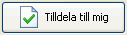
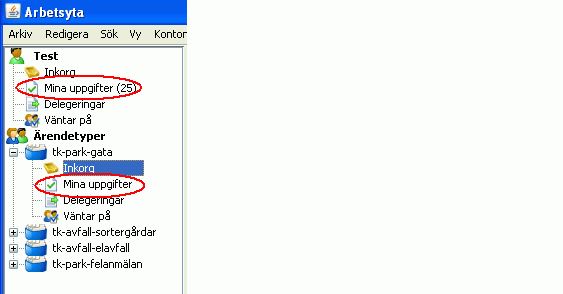
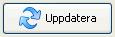
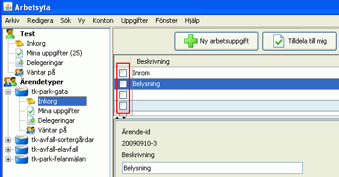

Ett ärende ägs av den Ärendetyp där det skapas. Inkorgen är en vy som visar alla ärenden som finns i Ärendetypen och som inte är tilldelade någon handläggare. För att arbeta med ärendet måste du tilldela dig själv arbetsuppgiften. Det gör du genom att markera ärendet och klicka på knappen Tilldela mig. Ärendet hamnar då i vyn Mina uppgifter.


För att markera en uppgift som avslutad klickar du helt enkelt i kryssruntan vid sidan om ärendet. En bock i rutan markerar att ärendet är avslutat. Du kan markera flera ärenden samtidigt. När du klickar på knappen Uppdatra så försvinner ärendena från vyn. Du kan alltid återsöka avslutade ärenden vi fönstret Sök.
